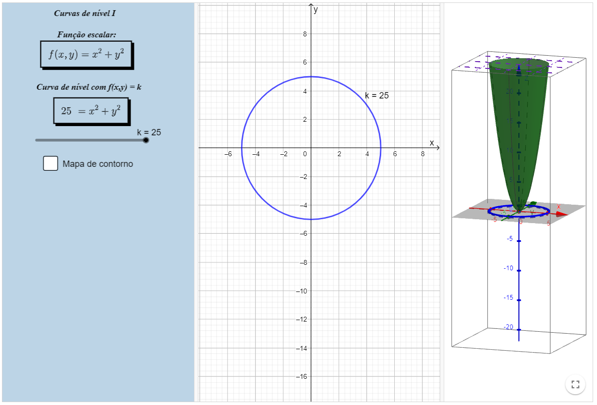
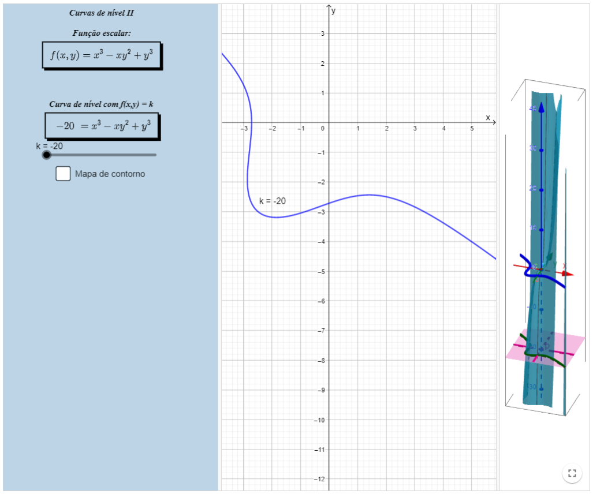
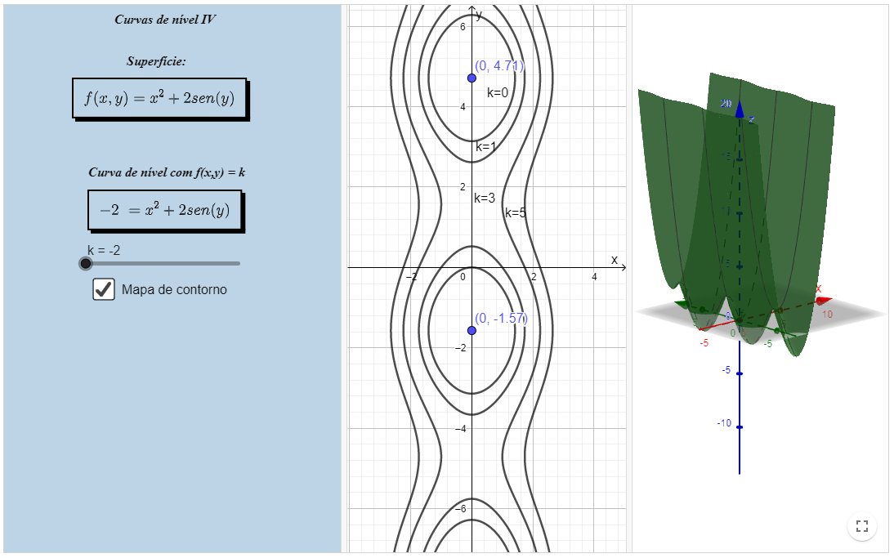

Funções escalares de várias variáveis
Conjunto de nível de funções escalares de várias variáveis reais
Definição
Seja \( F: \operatorname{Dom}(F) \in \mathbb{R}^{n} \longrightarrow \mathbb{R} \). Dado \( k \in \operatorname{Im}(F) \), temos que o conjunto de nível da função \( F \) correspondente ao nível
\(k\) é o subconjunto do domínio dado por \( C_{k}(F)=\{X \in \operatorname{Dom}(F) \mid F(X)=k\} \).
No caso onde trabalhamos funções escalares de duas variáveis, o conjunto de nível de \(F\) será uma curva , então denominadas curvas de nível. Uma família de curvas de nível é denominada um mapa de contorno.
Quando trabalhamos com funções escalares de três variáveis, o conjunto de nível de \(F\) será uma superfície, então denominada superfície de nível.
Podemos observar o "comportamento" das funções através das curvas ou superfície de nível, o que ajuda na compreensão e na manipulação desse tipo de função.
Abaixo apresentamos quatro applets sobre curvas de nível e um applet sobre superfície de nível.
Curvas de nível I
Curvas de nível II
Curvas de nível III

Curvas de nível IV
Superfície de Nível

O conteúdo apresentado foi gerado através das notas da professora Denise de Oliveira Pinto, do Departamento de Matemática Aplicada da Universidade Federal Fluminense.
Co-autores: Author:Begoña Alarcón, Guilherme Cardoso Garcia de Carvalho, Raphael Odalvo.